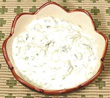

 |
Cucumber SauceFinland - Kurkkukaslike | ||||
| Makes: Effort: Sched: DoAhead: |
2 cup ** 45 min Yes |
This light, fluffy sauce is delightful with cold sliced meats, tongue and the like, particularly for folks who don't like horseradish. It keeps refrigerated about 3 days with fresh raw egg mayonaise, a week or so with commercial mayo. | |||
|
|
1 1/2 1/2 1/2 2 1/2 1/8 |
# t c c t T t |
Cucumber (1) Salt Mayonnaise (2) Whipping Cream Lemon Juice Dill fresh Pepper black |
Make: - (45 min - 20 min work)
|